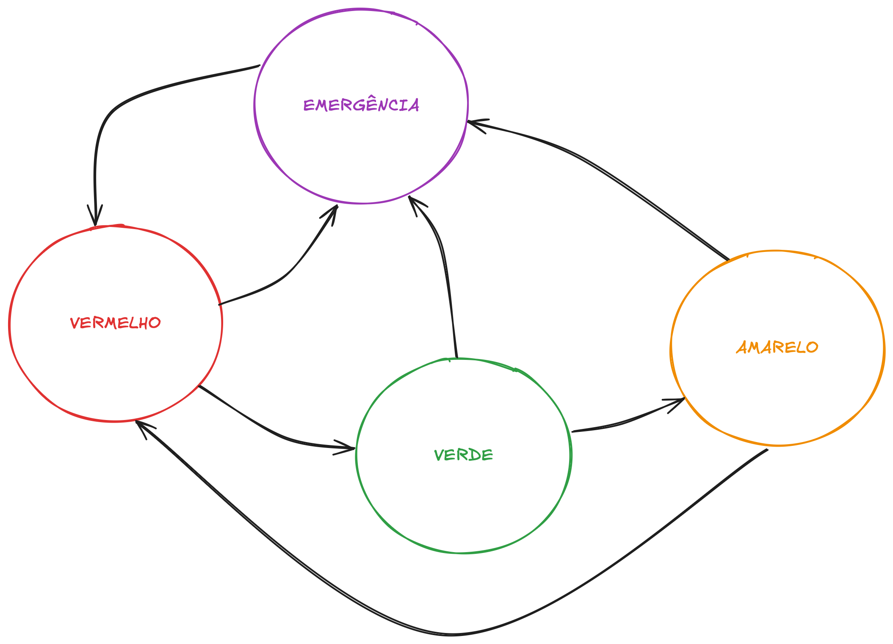

Lab04 - Máquinas de Estados (FSM)
Máquinas de Estados Finitos
Entendendo Máquinas de Estados Finitos
Imagine um personagem de videogame que pode estar:
- Parado
- Andando
- Correndo
- Pulando
O personagem só pode estar em um desses estados por vez, e muda de estado baseado em comandos do jogador. Isso é uma máquina de estados!
O que é uma Máquina de Estados Finitos?
Uma Máquina de Estados Finitos (FSM - Finite State Machine) é um modelo matemático de computação que pode estar em exatamente um de um número finito de estados em qualquer momento. É uma ferramenta poderosa para modelar comportamentos de sistemas que possuem estados distintos e transições entre eles.
Uma FSM é definida formalmente pelos seguintes componentes:
- Estados (S): Um conjunto finito e não-vazio de condições ou situações nas quais o sistema pode existir
- Alfabeto de entrada (Σ): Um conjunto finito de eventos ou entradas que podem desencadear transições
- Estado inicial (s₀): O estado em que a máquina começa sua operação
- Função de transição (δ): Define como a máquina muda de um estado para outro baseado no estado atual e no evento que ocorre
- Estados finais (F): Um conjunto (possivelmente vazio) de estados que indicam a conclusão da operação da máquina
Representação Visual de uma FSM
Uma FSM pode ser representada visualmente através de um diagrama de estados, onde:
- Os círculos (Dormir,Acordar) representam estados
- As setas (--->)representam transições entre estados
- Os rótulos nas setas (Alarme, Dormir) indicam os eventos que desencadeiam as transições
+--------+ Alarme +--------+
| Dormir |----------->| Acordar|
+--------+ +--------+
^ |
| Dormir |
+---------------------+
Por que usar Máquinas de Estados Finitos?
As FSMs são particularmente úteis em programação de sistemas embarcados pelos seguintes motivos:
- Organização do código: Permite dividir o comportamento do sistema em estados distintos e gerenciáveis
- Clareza: Torna o fluxo de controle mais claro e fácil de entender
- Manutenção: Facilita a adição de novos comportamentos sem modificar o código existente
- Previsibilidade: Garante que o sistema esteja sempre em um estado conhecido
Aplicando em projetos de sistemas embarcados
No Arduino, uma FSM nos ajuda a organizar o código em partes mais gerenciáveis:
- Em vez de código confuso com muitos ifs aninhados
// Abordagem com ifs aninhados
void loop() {
if (botaoPressionado) {
if (ledAceso) {
// Fazer algo
} else {
// Fazer outra coisa
}
} else {
// Fazer algo completamente diferente
}
}
// Usando maquina de estados
enum Estado {DESLIGADO, LIGADO, PISCANDO};
Estado estadoAtual = DESLIGADO;
void loop() {
// Verifica entradas e muda estado se necessário
verificarTransicoes();
// Executar ações do estado atual
switch (estadoAtual) {
case DESLIGADO:
// Ações quando desligado
break;
case LIGADO:
// Ações quando ligado
break;
case PISCANDO:
// Ações quando piscando
break;
}
}
Tipos de Máquinas de Estados Finitos
Existem dois tipos principais de FSMs:
- Determinísticas: Para cada estado e entrada, há exatamente uma transição para um próximo estado
- Não-determinísticas: Para cada estado e entrada, pode haver múltiplas transições possíveis
Para nossos propósitos com Arduino, utilizaremos principalmente FSMs determinísticas.
Implementação de FSMs em Arduino
Existem várias maneiras de implementar uma FSM em Arduino:
1. Usando uma variável de estado e estruturas switch-case
enum State {IDLE, RUNNING, JUMPING};
State currentState = IDLE;
void loop() {
switch (currentState) {
case IDLE:
// Código para o estado IDLE
if (conditionToRun) {
currentState = RUNNING;
}
break;
case RUNNING:
// Código para o estado RUNNING
if (conditionToJump) {
currentState = JUMPING;
}
break;
case JUMPING:
// Código para o estado JUMPING
if (conditionToIdle) {
currentState = IDLE;
}
break;
}
}
2. Usando funções para cada estado
enum State {IDLE, RUNNING, JUMPING};
State currentState = IDLE;
void loop() {
// Executa a função correspondente ao estado atual
switch (currentState) {
case IDLE: handleIdleState(); break;
case RUNNING: handleRunningState(); break;
case JUMPING: handleJumpingState(); break;
}
}
void handleIdleState() {
// Código para o estado IDLE
if (conditionToRun) {
currentState = RUNNING;
}
}
void handleRunningState() {
// Código para o estado RUNNING
if (conditionToJump) {
currentState = JUMPING;
}
}
void handleJumpingState() {
// Código para o estado JUMPING
if (conditionToIdle) {
currentState = IDLE;
}
}
Exemplo Prático: Semáforo
Um semáforo é um exemplo clássico!! Lembra da nossa primeira aula? Implementamos um semáforo que faz a transição entre VERMELHO, VERDE e AMARELO.
Agora vamos implementar esse clássico usando FSM, alem disso vamos adicionar um botão para modo de emergência.
Neste novo exemplo temos as seguinte condições de operação:
- Os
estadossãoVERMELHO,VERDE,AMARELOeEMERGÊNCIA - As
transiçõesocorrem após um determinadotempo - O sistema sempre segue a sequência VERMELHO → VERDE → AMARELO → VERMELHO
- De qualquer um desses estados,
pressionar o botãoleva ao estado deEMERGÊNCIA - Do estado de EMERGÊNCIA,
pressionar o botão novamenteretorna ao estado VERMELHO (reiniciando o ciclo normal)
Podemos visualizar o diagrama de estados da seguite forma:

A implementação do código fica da seguinte forma:
// Enumeração para representar os estados do semáforo
enum TrafficLightState {
RED, // Estado vermelho
GREEN, // Estado verde
YELLOW, // Estado amarelo
EMERGENCY // Estado de emergência (piscando amarelo)
};
// Configuração dos pinos dos LEDs e do botão
const int redPin = 11; // Pino do LED vermelho
const int yellowPin = 10; // Pino do LED amarelo
const int greenPin = 9; // Pino do LED verde
const int buttonPin = 2; // Pino do botão de emergência
// Configuração de tempos para cada estado
const unsigned long redDuration = 5000; // Duração do estado vermelho
const unsigned long greenDuration = 4000; // Duração do estado verde
const unsigned long yellowDuration = 2000; // Duração do estado amarelo
const unsigned long blinkInterval = 500; // Intervalo de piscar no modo emergência
const unsigned long debounceDelay = 50; // Tempo de debounce para o botão
// Variáveis de controle
TrafficLightState currentState = RED; // Estado atual do semáforo
unsigned long stateStartTime; // Tempo de início do estado atual
unsigned long lastBlinkTime = 0; // Último tempo de piscar no modo emergência
bool ledState = false; // Estado atual do LED no modo emergência
bool lastButtonState = LOW; // Último estado estável do botão
bool emergencyMode = false; // Indica se o modo de emergência está ativo
unsigned long lastDebounceTime = 0; // Último tempo de debounce
bool buttonPressed = false; // Indica se o botão foi pressionado
// Função para inicializar os pinos e a comunicação serial
void setup() {
pinMode(redPin, OUTPUT);
pinMode(yellowPin, OUTPUT);
pinMode(greenPin, OUTPUT);
pinMode(buttonPin, INPUT_PULLUP);
Serial.begin(9600);
Serial.println("Semáforo - Máquina de Estados");
stateStartTime = millis(); // Inicia o tempo do estado atual
}
// Função para controlar os LEDs de acordo com o estado atual
void setLights(bool red, bool yellow, bool green) {
digitalWrite(redPin, red);
digitalWrite(yellowPin, yellow);
digitalWrite(greenPin, green);
}
// Função principal que executa a máquina de estados
void loop() {
unsigned long currentTime = millis();
bool buttonState = !digitalRead(buttonPin); // Lê o estado do botão (invertido devido ao PULLUP)
// Implementação do debounce
if (buttonState != lastButtonState) {
lastDebounceTime = currentTime; // Reinicia o tempo de debounce
}
// Verifica se o botão está estável há mais tempo que o debounceDelay
if ((currentTime - lastDebounceTime) > debounceDelay) {
// Verifica se o estado do botão mudou
if (buttonState != buttonPressed) {
buttonPressed = buttonState; // Atualiza o estado do botão
// Se o botão foi pressionado (mudou para HIGH)
if (buttonPressed) {
emergencyMode = !emergencyMode; // Alterna o modo de emergência
if (emergencyMode) {
currentState = EMERGENCY;
Serial.println("Modo de emergência ATIVADO");
} else {
currentState = RED;
Serial.println("Modo de emergência DESATIVADO");
}
stateStartTime = currentTime; // Reinicia o tempo do estado atual
}
}
}
lastButtonState = buttonState; // Atualiza o último estado do botão
// Máquina de estados do semáforo
switch (currentState) {
case RED:
setLights(HIGH, LOW, LOW); // Acende o vermelho e apaga os outros
// Transição para o estado verde após o tempo de duração
if (currentTime - stateStartTime >= redDuration && !emergencyMode) {
currentState = GREEN;
stateStartTime = currentTime;
Serial.println("Transição: VERMELHO -> VERDE");
}
break;
case GREEN:
setLights(LOW, LOW, HIGH); // Acende o verde e apaga os outros
// Transição para o estado amarelo após o tempo de duração
if (currentTime - stateStartTime >= greenDuration && !emergencyMode) {
currentState = YELLOW;
stateStartTime = currentTime;
Serial.println("Transição: VERDE -> AMARELO");
}
break;
case YELLOW:
setLights(LOW, HIGH, LOW); // Acende o amarelo e apaga os outros
// Transição para o estado vermelho após o tempo de duração
if (currentTime - stateStartTime >= yellowDuration && !emergencyMode) {
currentState = RED;
stateStartTime = currentTime;
Serial.println("Transição: AMARELO -> VERMELHO");
}
break;
case EMERGENCY:
// Pisca o LED amarelo no modo de emergência
if (currentTime - lastBlinkTime >= blinkInterval) {
ledState = !ledState;
setLights(LOW, ledState, LOW); // Alterna o estado do LED amarelo
lastBlinkTime = currentTime;
}
break;
}
}
DESAFIO1
Teste o código acima do semáforo, para isso:
- Analise o código fornecido acima.
- Identifique claramente todos os pinos utilizados.
- Monte o circuito corretamente no simulador Wokwi.
- Carregue o código e observe as mudanças dos estados.
- Teste o modo emergência ativando e desativando pelo botão.
DESAFIO2
Agora, chegou a hora de você dar show! E colocar a máquina pra funcionar.
Após testar e entender o código base acima:
-
Adicione mais um botão:
- Um botão será dedicado exclusivamente à ativação do modo emergência.(já implementado)
- Outro botão servirá para acelerar as transições entre estados no modo normal.
-
Crie um novo estado adicional:
- Adicione o estado "PEDESTRE", onde todos os LEDs ficam apagados por um breve momento (3 seg.) ao pressionar um
terceiro botão, simulando travessia.
- Adicione o estado "PEDESTRE", onde todos os LEDs ficam apagados por um breve momento (3 seg.) ao pressionar um
-
Adicione um sensor analógico (o potenciômetro que vimos no lab2):
- O potenciômetro deve determinar o tempo que o semáforo fica no estado VERDE, variando entre 2 a 10 segundos.